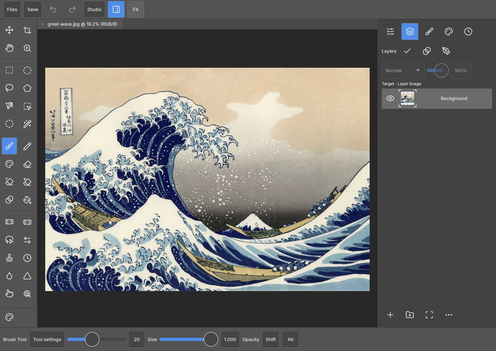

A workspace by 1puniv0.1
A studio
within reach.
Pencil draws. Fingers navigate.
PhotoCraft’s shared Rust engine, with room for your hands.
Your pictures stay in your browser. Save to Files before closing.

Same engine. New reach.
Layers, brushes, channels and paths. Touch inspectors that move with the canvas. A brush studio built on PhotoCraft’s own controls.
Source and roadmapPick up where you create
Start in Safari, on the same network as this host. Open an image, make a mark, save it to Files. Automatic recovery is on the roadmap.
Meet PhotoCraft upstream